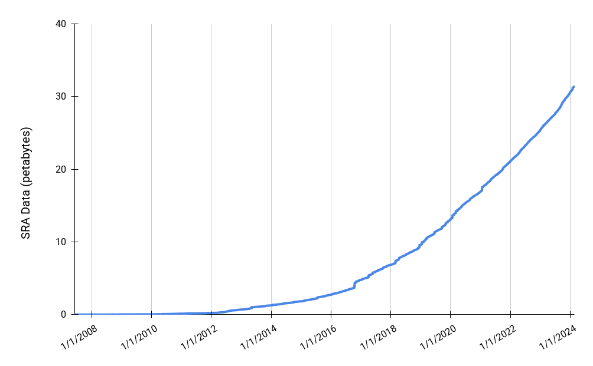
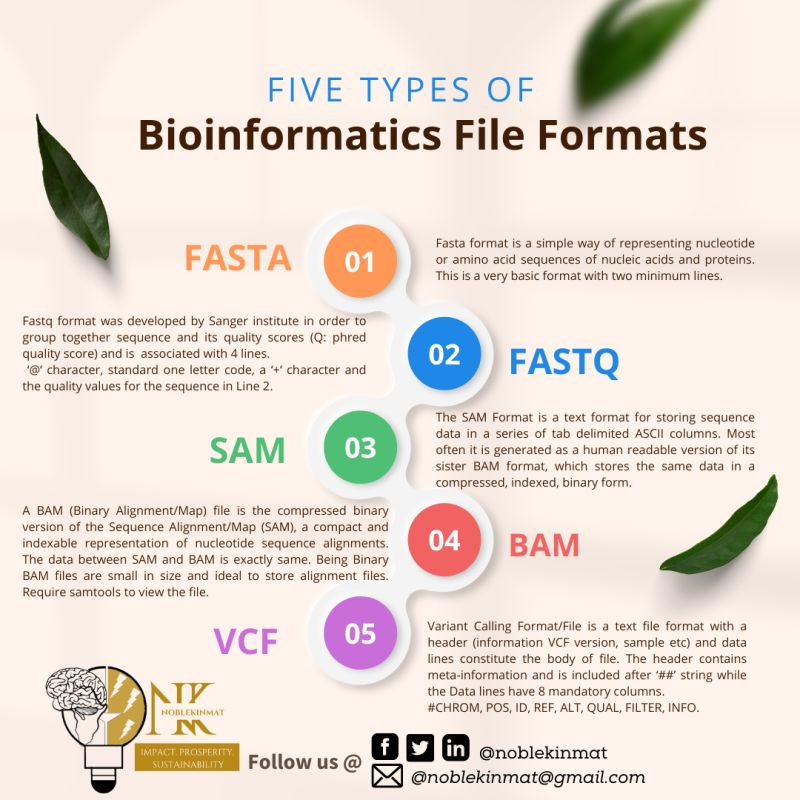
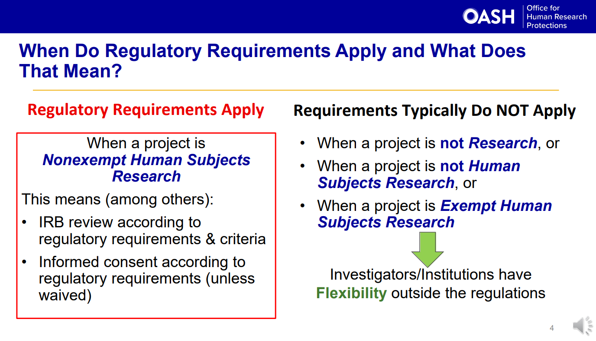
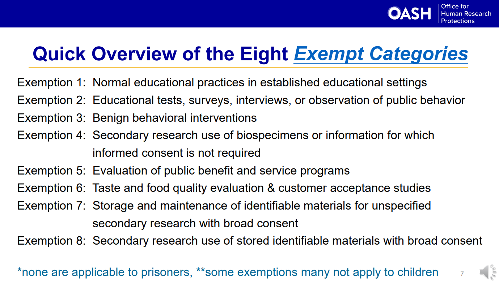
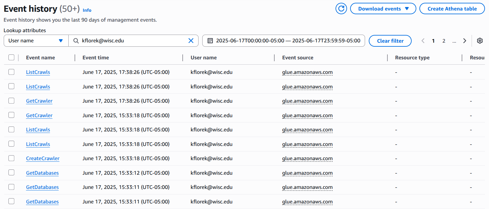
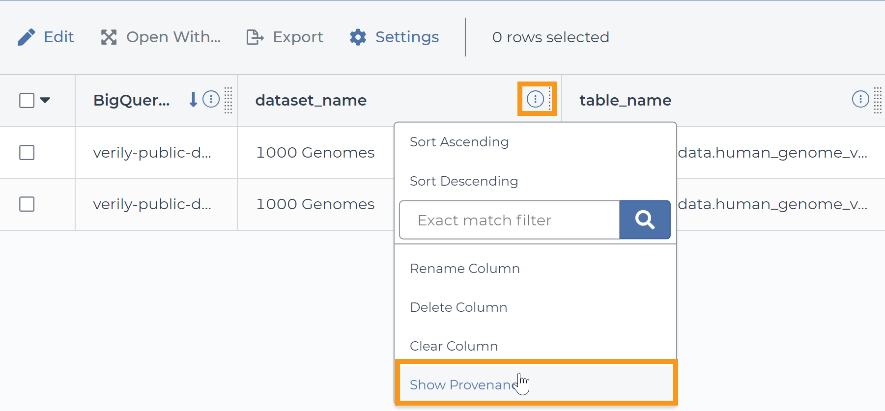
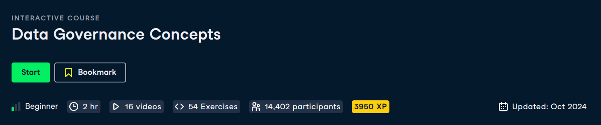

Data Governance Frameworks for Bioinformatics
Kelsey Florek, PhD, MPH
Senior Genomics and Data Scientist
Wisconsin State Laboratory of Hygiene
Objectives
- Understand the core concepts of data governance
- Explore the challenges in genomic data management
- Identify the strategies and frameworks used in research and public health
- Why Data Governance matters and its relevance to public health bioinformatics
What is Data Governance?
What is Data Governance
"A data management function to ensure the quality, integrity, security, and usability of the data collected by an organization"
"The purpose of data governance is to build trust in data"
Core Components
Discoverability
- Metadata Management
- Data Quality
- Classification and access control
Security
- Data Privacy
- Data Security
- Classification and access control
Accountability
- Data Lineage
- Auditing and Assessments
- Compliance
Discoverability
Data Inventory and Cataloging: identify and list all data sources, capturing details including data type, location, owner, access list/tags, and usage
Metadata: data that provides information about other data
- Technical: filename, size, creation date, modified date, location, lineage
- Business: sample id, patient name, facility location
- Administrative: security classification, access permissions, audit and change logs
- Descriptive: keywords associated with data, geographic association of data, outbreak id
Security
- Why is data privacy important?
- Why is data security important?
- How do you maintain access control?
- Who determines the security classification of data? (Public, Internal, Sensitive, Restricted)
Accountability
Data Owners and Stewards: who is responsible for the management of the data, who uses the data, who ensures compliance
Data Provenance: a comprehensive historical record that details the data's origins, modifications, and usage. Can you answer questions like:
- Where did this data come from?
- how did it get here?
Data Audits: conduct review of data to ensure accuracy, consistency, and security
Data Governance Frameworks
FAIR Principles (Findable, Accessible, Interoperable, Reusable)
Data Governance Frameworks
Global Alliance for Genomics & Health (GA4GH)
Data Governance Frameworks
Public Health Alliance for Genomic Epidemiology (PHA4GE)
Genomic data presents unique governance challenges
Genomic data is high-throughput
- 60,000,000,000 ATGC's generated per Nextseq (600 cycle P1) run
- 40,000 - 150,000 words in a novel
- average word length in English is 4.79
- one sequencing run would generate 131,853 novels with 95,000 words each
- the average person reads ~2,000 books in a lifetime
Genomic data is high-throughput
Size of NCBI SRA
Genomic data is multi-modal
There are a numerous data formats and many incompatibilities
Protected Health Information (PHI)
18 Identifiers
- Name
- Address
- Dates related to an individual
- Telephone Numbers
- Fax Numbers
- Email Address
- Social Security Number
- Medical Record Number
- Health plan beneficiary number
- Account Number
- Certificate or license number
- Vehicle identifiers and serial numbers, including license plate
- Device identifiers and serial numbers
- Web URL
- IP Address
- Finger or voice print
- Photographic image
- Any characteristic that could identify the individual
Protected Health Information (PHI)
Is genomic data PHI?
"We have shown that it is possible to infer a genotypic barcode specific to an individual on the basis of RNA profiling data from that individual."
"To determine whether a given subject was enrolled in the HCC studies, we would only need to genotype roughly 1,000 SNP markers and apply the methods described herein."
Interoperability
HL7 FHIR
"it was observed that sequencing data may often need reanalysis... new resource instances can easily be linked to existing ones thanks to FHIR's JSON/XML-based architecture and RESTful application program interface (API)
Ethical and Legal Requirements
Secondary Use of Genomic Data: uses of data that are directed to purposes other than patient care
Ethical and Legal Requirements
Secondary Use of Genomic Data: uses of data that are directed to purposes other than patient care
Who is responsible in Data Governance?
Key Roles in Data Governance
- Data Stewards: responsible for ensuring the quality and fitness for purpose of the organization's data assets, including metadata
- Compliance Officers: ensures an organization adheres to legal, regulatory, and ethical standards
- Data Owner: the individual or group responsible for the accuracy, integrity, and use of data within an organization
- Bioinformatician: develops and runs complex analyses on the data
- IT and Security Leads: responsible for infrastructure and framework that ensures integrity of an organization's data
Governance Committees
Responsibilities: ensure data quality and security, develop guidelines for classification, ensure compliance, define access and sharing protocols, promote integration and interoperability, lifecycle management, risk management.
Functions: establish policies and frameworks, training and awareness, audits
Best Practices: define clear ownership, strong leadership support, interdepartmental collaboration, continuous improvement
Challenges: cultural resistance, changing compliance requirements, balancing access and privacy, data complexity
Organization Size and Data Governance
Small organizations/teams -> fewer people interacting with less data -> simplified access strategies
Larger organizations/teams -> more people interacting with larger data -> complicated access strategies
Size alone is not responsible for complexity -> research institutions are complex web of smaller departments and labs
Tools that support genomic Data Governance
Data Cataloging
- Excel
- Cloudera
- AWS Glue
- Azure Data Catalog
- Google Cloud Data Catalog
- Data Hub
- Amundsen
Access Control and Audits
AWS Cloudtrail / Google Cloud Audit Logs / Azure Audit Logs
Data Provenance/Lineage
Terra/WDL
Nextflow
Integrations with Laboratory Infrastructure
Storage Solutions: data categories/lifecycles
- Raw Data Files
- Temporary Intermediate Files
- Outputs
- Axillary Data
Laboratory Infrastructure
Storage Solutions: data categories/lifecycles
- Cold data - long term storage, infrequently accessed
- Warm data - medium term storage, accessible but not needed frequently
- Hot data - short term storage, immediately accessible and fast
Wisconsin Storage Infrastructure Example
- Cold Storage: Backups using AWS S3 Glacier (GitHub,FastQ,Results)
- Warm Storage: On-premises >400TB Storage Area Network (SAN) using Shingled Magnetic Recording (SMR) (FastQ, Projects)
- Hot Storage: On-premises 30TB Storage Area Network (SAN) using high-speed hard drives and AWS S3 (FastQ, Databases, Results, Intermediate Files)
Secure Transfer
When should encryption be used?
Developing a culture around data stewardship
Data Governance Training
Standards and Policies
- Policies: statements of intent, rules that must be followed
- Standards: a best practice that makes following the rules easier
Wisconsin Standard for Version Control
- Steps for updating containerized software and scripts
- Steps for updating pipelines, including semantic versioning approach
- Steps for updating infrastructure, and change requests
Standards and Policies
- Policies: statements of intent, rules that must be followed
- Standards: a best practice that makes following the rules easier
Wisconsin Policy for Operational Continuity
- Outline of analysis infrastructure
- Rules governing the infrastructure operation (data lifecycle, backups, access, etc..)
- Rules for incident response